Paintings of things, not the appearance of things.
Invented paintings and drawings, built from sketches, memory and a lifetime of looking. Made in a studio in West Cornwall.
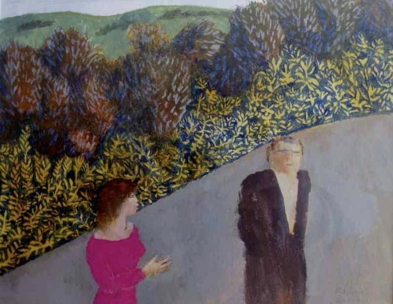
Landscape and figures
Recent work. All paintings are for sale; please get in touch to arrange viewing, payment and delivery.
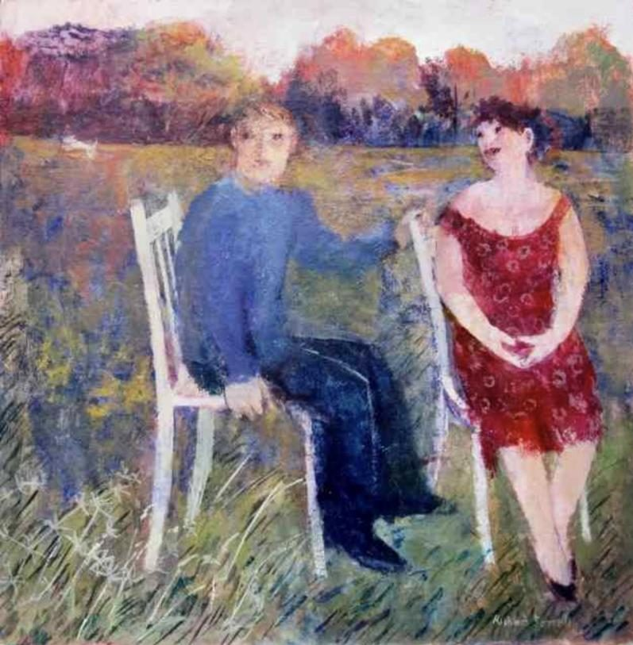
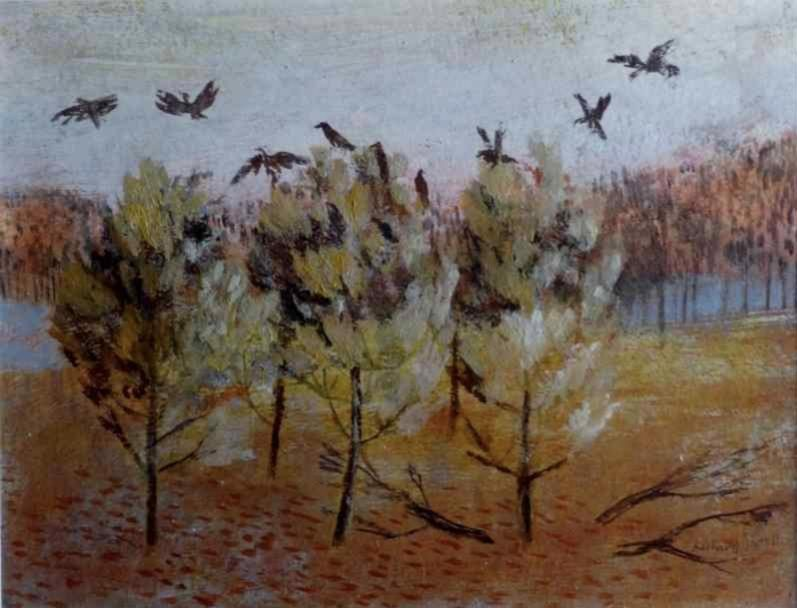
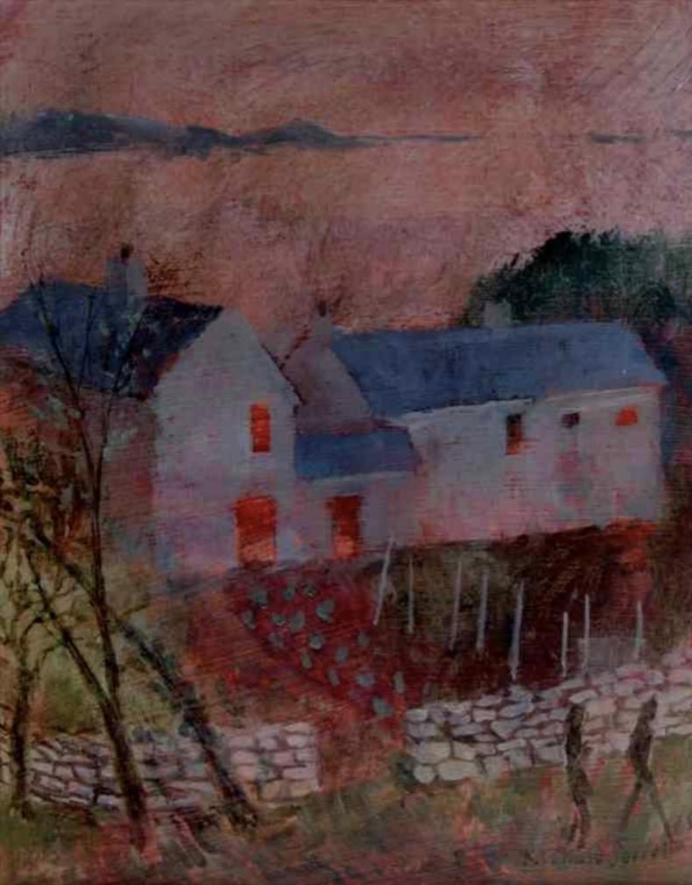
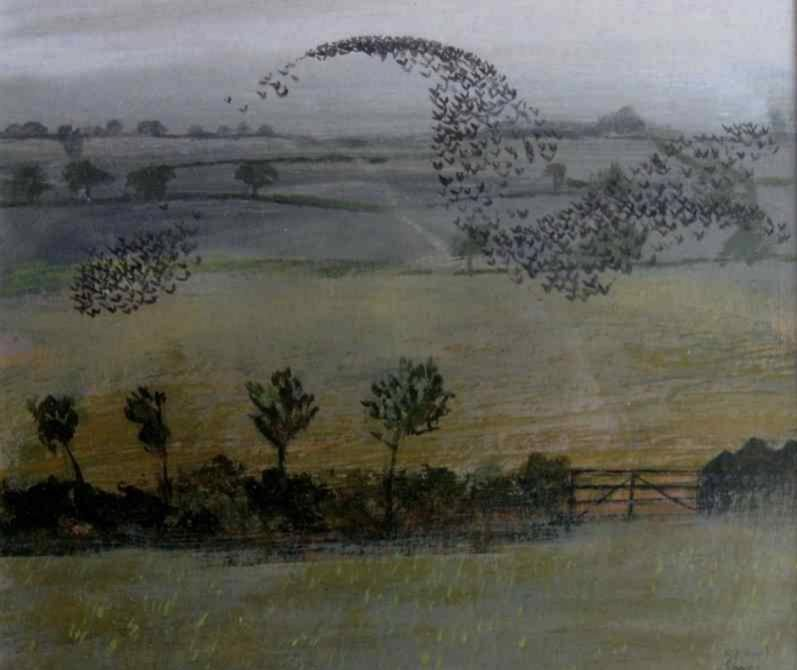
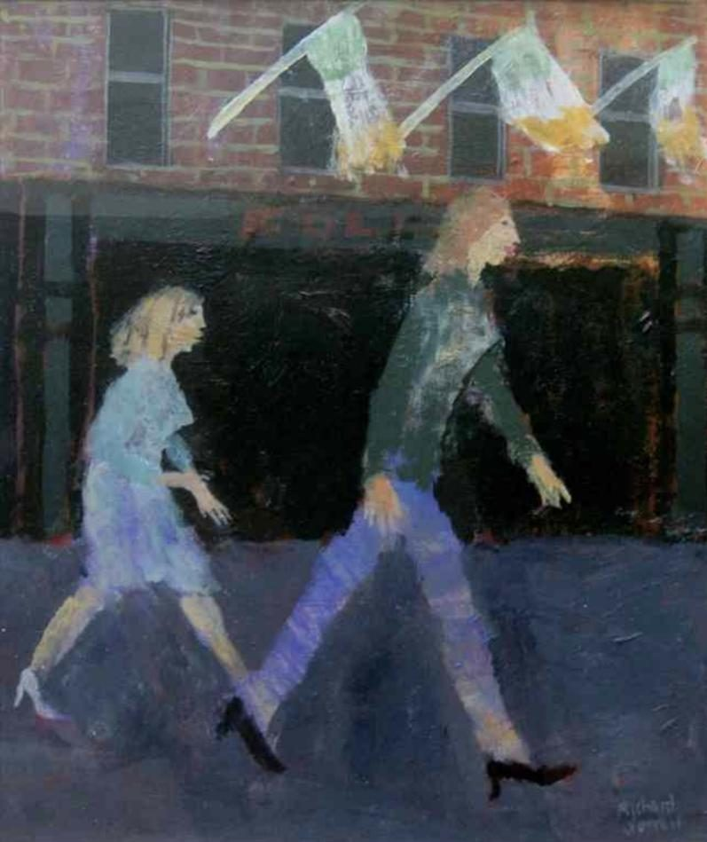
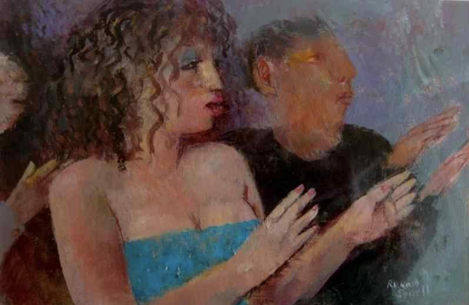
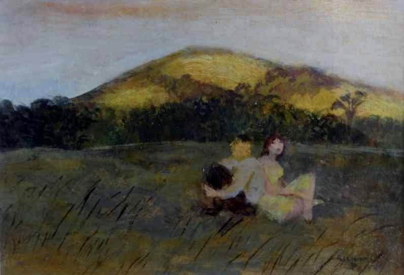
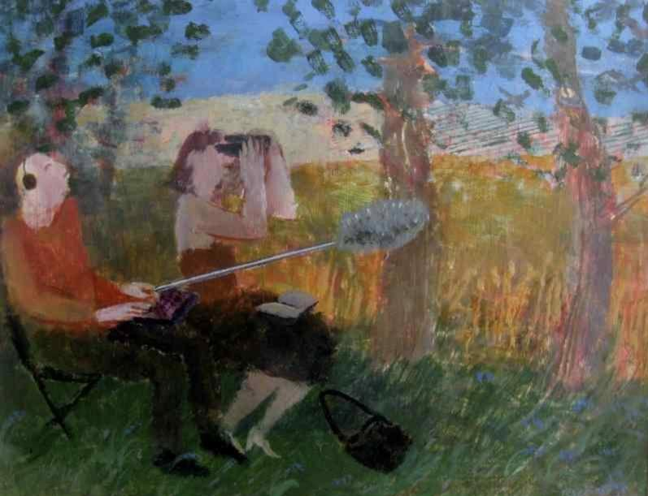
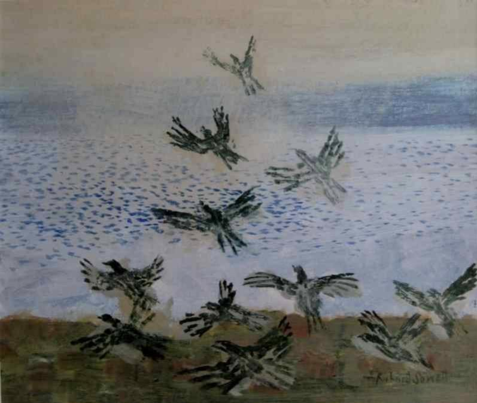
Drawings
Ink and brush drawings, shown at the Works on Paper Fair.
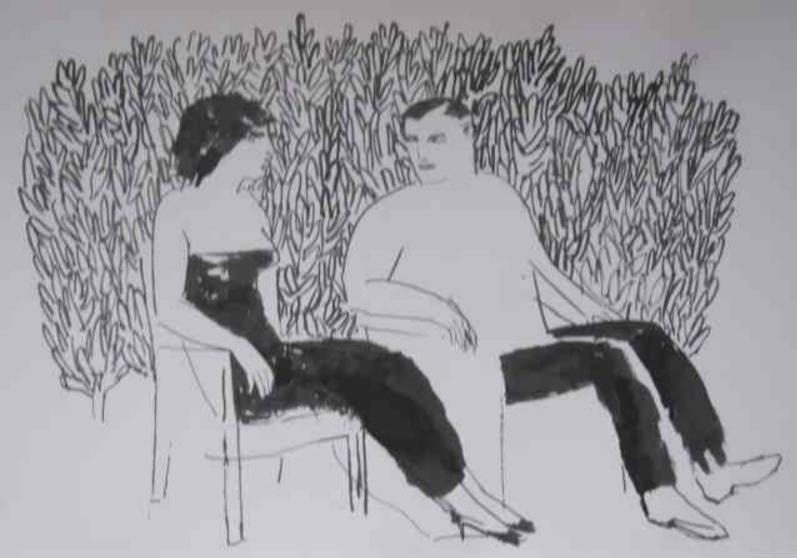
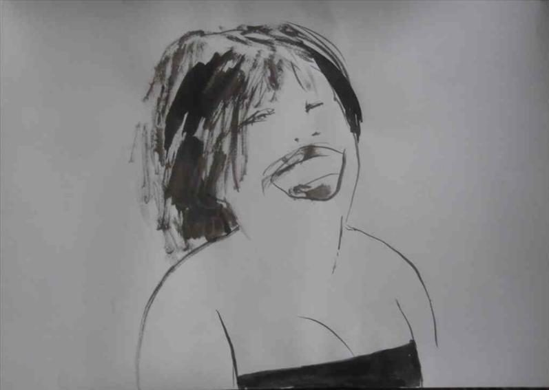
The pictures are inventions, or reinventions of reality. Sometimes they may appear a little awkward and strange, but it is their awkwardness that gives them the power to communicate.
Richard Sorrell was born in 1948, the son of the historical draughtsman and painter Alan Sorrell and the watercolourist Elizabeth Sorrell. He studied at Walthamstow Art School, Kingston College of Art and the Royal Academy Schools.
For around 25 years, living in London and Norfolk, he painted landscape, still life and portraits, and became known for aerial views of great houses for the National Trust and private owners. Over the past two decades the invented paintings have come to the fore, alongside an interest in sculpture, gardens and planting.
He was elected to the Royal Watercolour Society in 1975 and served as its President from 2006 to 2009.
Societies
- Royal Watercolour Society President 2006 to 2009
- Royal Society of British Artists de Laszlo Medal 2002
- New English Art Club
- Art Workers Guild
- Small Paintings Group
Exhibitions
- Royal Academy Summer Exhibition since 1971
- Agnew's, London
- Hayward Gallery, Lutyens Exhibition
- Galleries Sternberg, Chicago
- Rainyday Gallery, Penzance
Collections
- Victoria and Albert Museum
- The National Trust
- Museum of London
- The Courtauld Institute
- The Faringdon Collection
In the studio
To buy a painting or arrange a studio visit, call 01736 369 613 or email sorrellr@aol.com